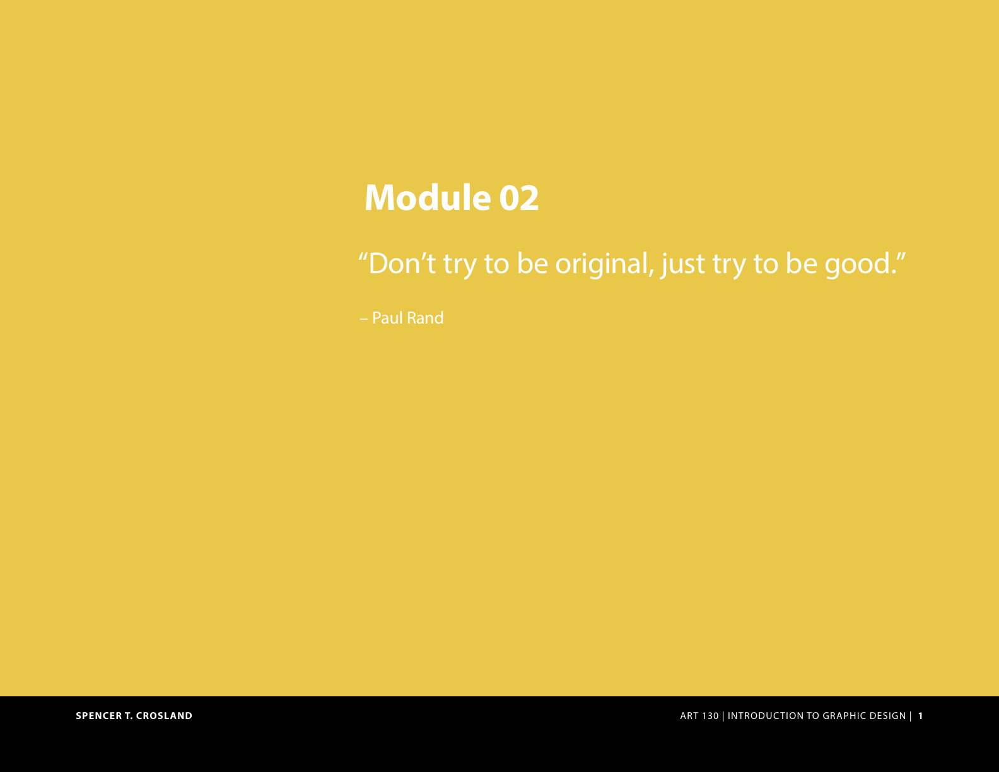
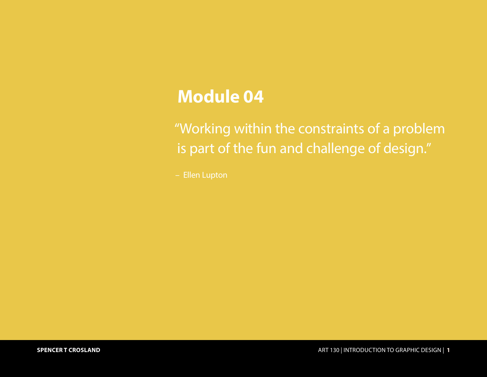

Week 1: Principles of Design
This week was dedicated to the introduction of the princples of design. Using those priciples sketches were prepared and then digital renderings were created in Adobe Illustraor. All work was then placed in a Process Book using Adobe InDesgin. The student first learned the principles of design before they found one professional design of each of the six principles of design.

Week 2: Album Project Kickoff
This week's purpos was creating an album cover for a single instrumental song of the student's choice created before 1950. First, the student learned about the project and begin sketching their album covers. Digital renderings were created as three compositions communicating three different feelings. The student also started picking color for the album.

Week 3: Album Project Refinement

Week 4: Album Project Completeion